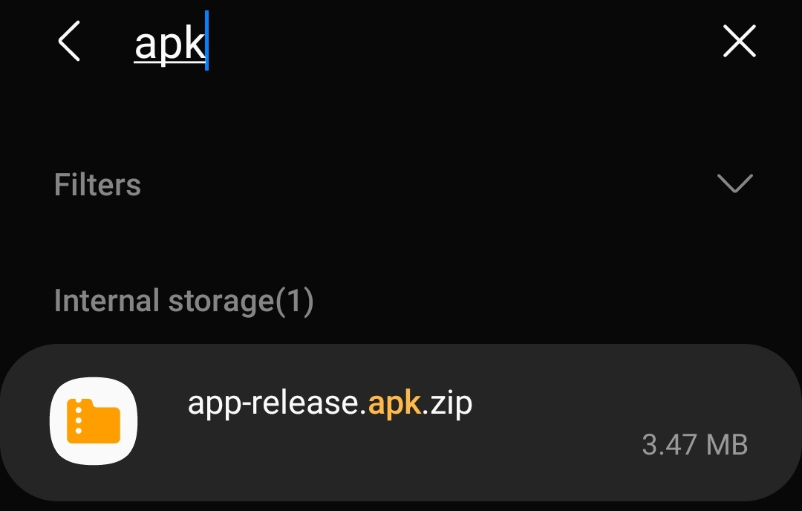
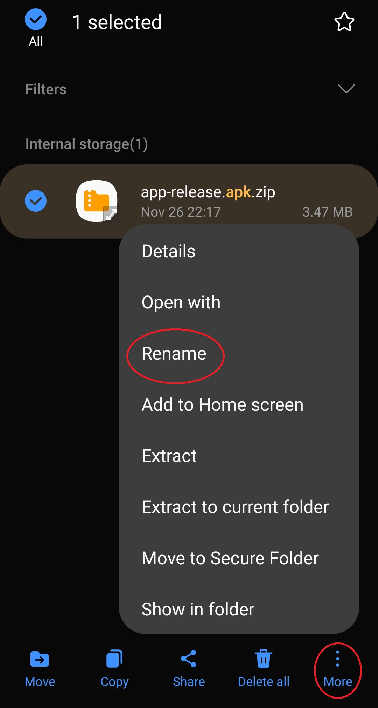
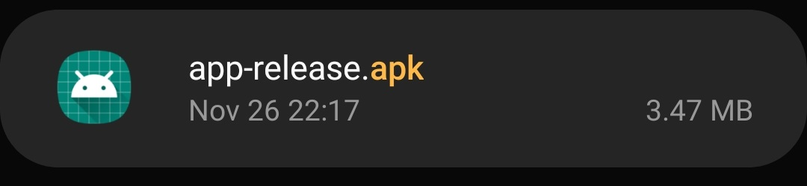
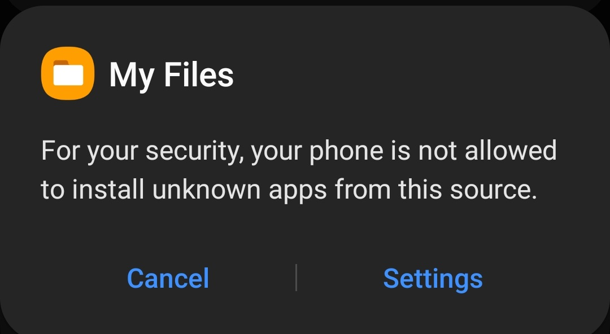
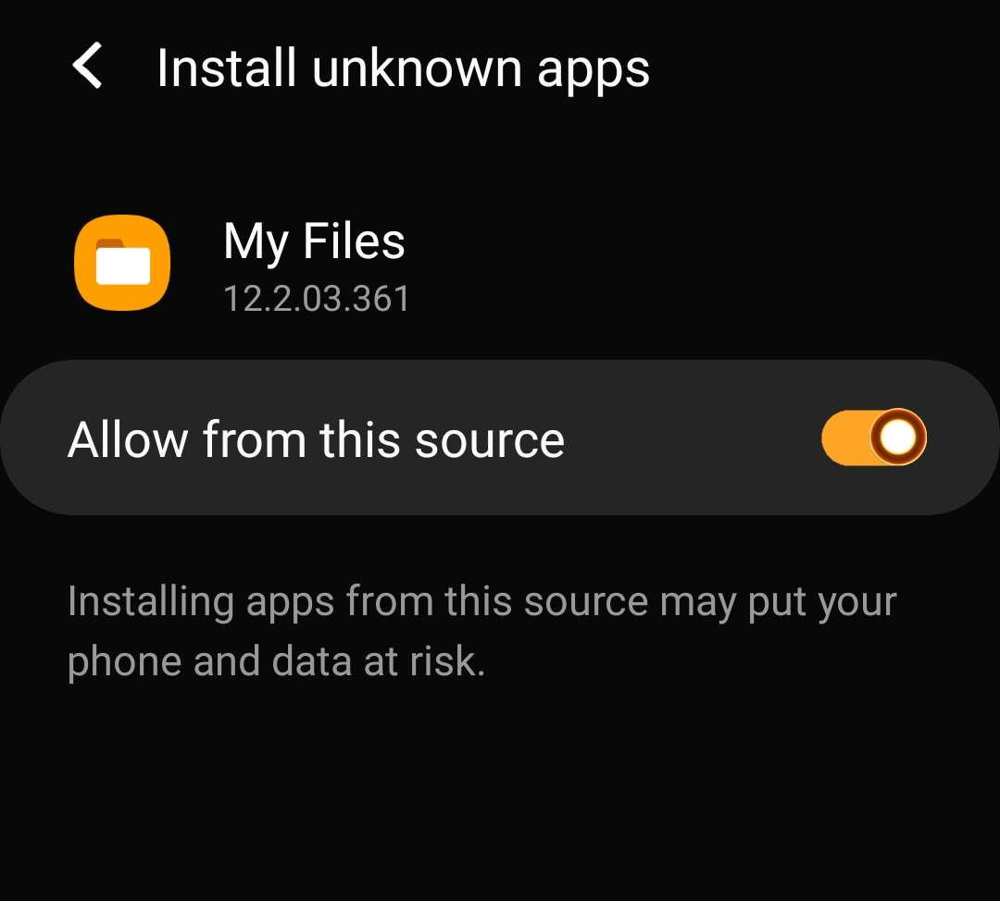
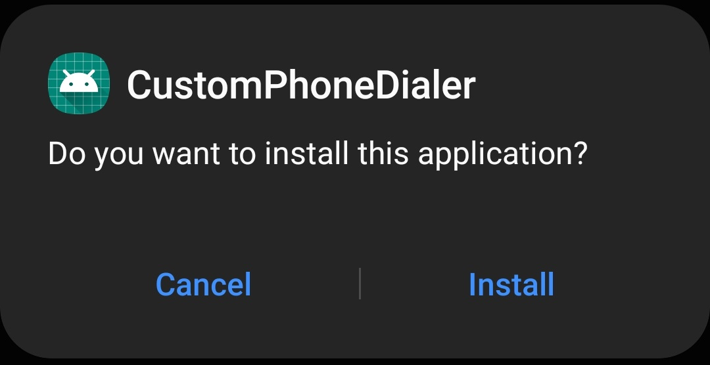
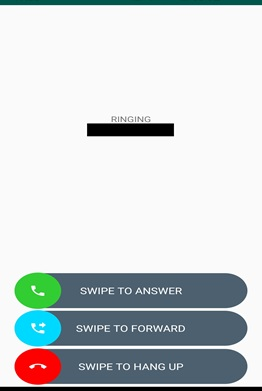

Directions for downloading/using CustomPhoneDialer Android app
Step 1. Navigate to https://cs.virginia.edu/~jss5ha/downloadpage.html on your mobile device (not your desktop/laptop computer)
Step 2. Download APK zip file
(a) Click on the “APK Download” button to start the download.
(b) Once downloaded, click on “open” or similar button to begin
NOTE: It is likely that the APK file will be downloaded as a zip file. However, this is browser dependent. If the file you download is an APK file without manipulation, skip to step 4.
Step 3. Change file extension
(a) Open your device’s default File Manager app
(b) Navigate to the Downloads folder
(c) Locate the file named app-release.apk.zip

(d) Long press the file and tap “More” or some similar action, and find the “rename file” option

(e) Remove the “.zip” at the end of the file name. The file should read “app-release.apk”

Step 4. From your device’s default file manager app, find and open the app-release.apk file
(a) If you have never sideloaded an app on your mobile device before, it is likely you will get some error that looks like this:

This is a standard Android security protection to prevent you from accidentally downloading malicious apps. If you get this error, click on “Settings” and change the settings that pops up to “Allow from this source” for the browser you are currently using. The option should look something like this (it may look slightly different depending on your version of Android):

You are welcome to turn this option off again once the app is downloaded. It is only needed until installation is complete.
(b) After clicking to “Open” the file, click “Install” or similar option in the next Android
pop-up window. It should something like this:

After you click install, CustomPhoneDialer will be installed to your phone.
Step 5. Set CustomPhoneDialer to be your default phone app and allow all permissions if applicable
To do this, open up the CustomPhoneDialer app. Once you do so, a popup box should automatically appear asking if you want to make it your default phone app. Select “Yes” or similar option. This ensures that you will be given the option to forward phone calls when you have an incoming call. Make sure to allow all permissions for CustomPhoneDialer if necessary (This should happen by default). You will be able to use CustomPhoneDialer as your main phone app for the duration of the study. However, if you would prefer to make calls with your normal phone app, that is totally fine. However, you must ensure that CustomPhoneDialer remains your default phone app for the duration of the study so incoming calls get routed through it.
Step 6. How to forward calls
(a) When you have an incoming call, 3 options will appear at the bottom of the app screen. Simply swipe the option you want.
(b) To get credit for forwarding calls for the purposes of compensation, you must swipe the forwarding option. However, if you do so, keep in mind you will NOT receive a voicemail from the caller. So, if the caller is someone you know or a potentially important phone call, we do not recommend forwarding the call. We only recommend forwarding calls of callers whose number looks suspicious – in other words, callers that you suspect to be either spam or a robocall.
(i) After swiping the forward option, you MUST wait for the call to end naturally. YOU CANNOT SWIPE HANG UP AFTER SELECTING CALL FORWARDING. I repeat, you cannot swipe hang up, or close the app until the ringtone ends. If you do so, the call will not be forwarded to our servers. This means you may have to wait 30-40 seconds after swiping the “Swipe to forward” button for the call to forward. We apologize for any inconvenience this may cause.
(ii) Remember that to complete the study and receive the $4 compensation, you are required to forward at least one call, and that for every call you forward after that you will receive an additional 20 cents (Up to 20 additional calls, or an additional $4).
